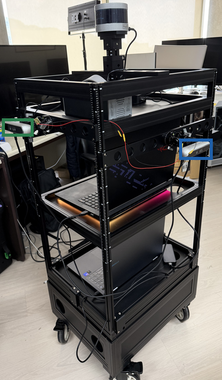
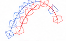

(a) SLAM device
Mobile platform

SLAM RGB-D or LiDAR
Real-time tracking

every input frame, within the camera period
Keyframe graph
loop closure corrects past keyframes
Pose message (every frame)
capture time t, camera pose Tmap←S,
reference keyframe Kref and its pose Tmap←K
reference keyframe Kref and its pose Tmap←K
Keyframe list
all (K, Tmap←K), periodically and re-sent after each map change